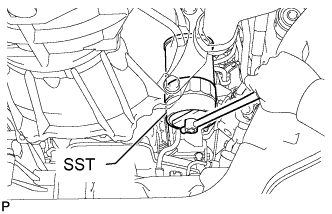

МАСЛЯНЫЙ РАДИАТОР ДВИГАТЕЛЯ > СНЯТИЕ |
| 1. REMOVE GENERATOR ASSEMBLY |
Remove the generator (See page Нажмите здесь).
| 2. REMOVE EXHAUST MANIFOLD |
Remove the exhaust manifold (See page Нажмите здесь).
| 3. DRAIN ENGINE COOLANT |
Ослабьте пробку сливного крана радиатора.

| *1 | Пробка радиатора | *2 | Бачок радиатора |
| *3 | Пробка сливного крана радиатора | *4 | Пробка сливного крана блока цилиндров |
Слейте охлаждающую жидкость, сняв крышку радиатора.
Ослабьте пробку сливного крана блока цилиндров.
Ослабьте пробку сливного крана блока цилиндров и слейте охлаждающую жидкость из двигателя.
| 4. DRAIN ENGINE OIL |
Remove the oil filler cap.
Remove the oil drain plug and gasket, and then drain the oil into a container.
Clean the drain plug and install it with a new gasket.
| 5. DISCONNECT OIL FILTER SUB-ASSEMBLY |
|  |
Using SST, remove the oil filter.
| 6. DISCONNECT VACUUM PUMP OIL INLET HOSE |
 |
Remove the union bolt and gasket, and then disconnect the vacuum pump oil inlet hose from the cylinder block.
| 7. REMOVE OIL FILTER BRACKET SUB-ASSEMBLY |
 |
Remove the 10 bolts, 2 nuts, oil filter bracket and gasket.
| 8. REMOVE OIL COOLER ASSEMBLY |
Remove the 4 nuts, oil cooler and 2 gaskets.